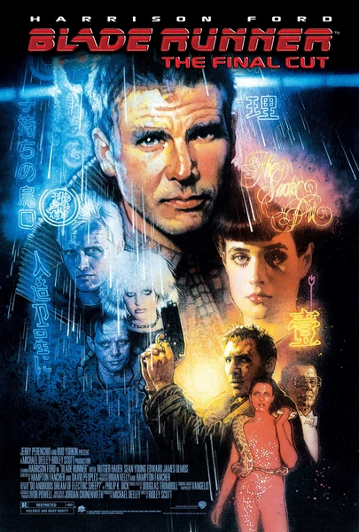

Фильм · 1982 · Триллер, Фантастика
Лос-Анджелес, 2019 год: бесконечный дождь, неоновые огни и корпорации, торгующие жизнями. Рик Декард, бывший «бегущий по лезвию», вынужден вернуться к работе, чтобы уничтожить группу сбежавших с внеземной колонии репликантов модели Nexus-6. Проблема в том, что он охотится не на машины: репликанты Nexus-6 помнят своих матерей, боятся смерти и способны любить сильнее, чем окружающие их люди. Эта экранизация произведения Филипа К. Дика определила визуальный стиль киберпанка на десятилетия вперед и по сей день остается лучшим фильмом о том, что значит быть человеком.
Los Angeles, 2019: endless rain, neon, corporations trading in lives. Rick Deckard, a retired blade runner, is pulled back in to eliminate a group of escaped Nexus-6 replicants from an off-world colony. The problem is he is not hunting a machine: Nexus-6 remember their mothers, fear death and love more than the people around them. A Philip K. Dick adaptation that defined cyberpunk's visual language for decades — and is still the best film about what being human means.